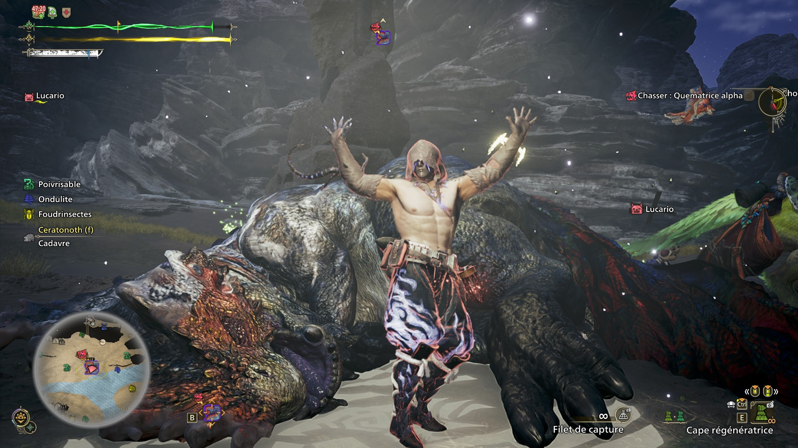
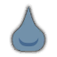
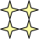
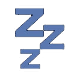
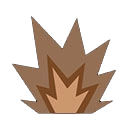
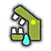
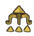
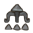
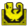
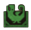

La Quematrice
Le poulet flamboyant

Wyvernes de terre à la queue démesurée. Elles répandent une substance inflammable qui se vaporise rapidement et qu'elles embrasent en raclant le sol de leur queue. Quematrice ne chassent que très rarement, préférant se nourrir de charognes d'herbivores abandonnées, ce qui entraîne souvent des affrontements avec de plus petits carnivores.
Surveillez l'endroit où la substance inflammable se dépose pour estimer la propagation du feu du Quematrice. Comme il se sert de sa queue aussi bien pour attaquer à distance que pour allumer des brasiers, la couper permettra de l'affaiblir considérablement.
Présentation de la Quematrice dans Monster Hunter Wilds
La Quematrice est une Wyverne de terre reconnaissable à sa queue démesurée, véritable arme redoutable qu'elle utilise pour raser le sol et enflammer une substance inflammable qu'elle sécrète elle-même. Ce monstre à feu de Monster Hunter Wilds se distingue par un comportement atypique : contrairement à de nombreux autres monstres, la Quematrice ne chasse que très rarement, préférant se nourrir de charognes d'herbivores abandonnées. Cette habitude alimentaire particulière entraîne cependant de fréquents affrontements avec de plus petits carnivores venus disputer ces mêmes ressources.
On retrouve la Quematrice dans les Plaines ainsi que dans la région de Wyveria, deux zones de répartition géographique où les chasseurs peuvent la traquer. Grâce à sa maîtrise du feu et à sa queue explosive, elle représente un défi technique intéressant pour tout chasseur cherchant à progresser dans Monster Hunter Wilds.
Comment battre la Quematrice
Pour vaincre la Quematrice dans Monster Hunter Wilds, il est essentiel de bien connaître son comportement et ses points faibles élémentaires. Cette Wyverne de terre utilise sa longue queue pour racler le sol, enflammer une substance inflammable et infliger d'importants dégâts de feu à distance. Il est donc recommandé d'éviter les zones frontales lors de ses attaques de queue et de privilégier un équipement résistant au feu.
Côté offensif, l'élément Eau reste le plus efficace contre la Quematrice, tout comme les dégâts tranchants et contondants. Cibler la queue permet de la trancher, réduisant ainsi sa capacité à enflammer le terrain, tout en récupérant de précieux matériaux de craft. Une stratégie de combat efficace contre la Quematrice repose donc sur la patience, le bon choix d'armes et une gestion prudente des phases où le monstre s'enflamme entièrement.

Les points faibles de la Quematrice
Connaître les points faibles de la Quematrice permet d'optimiser considérablement son temps de chasse dans Monster Hunter Wilds. Cette Wyverne cracheuse de flammes présente une résistance totale au Feu sur l'ensemble de son corps, un élément donc à proscrire totalement de votre équipement offensif.
En revanche, l'élément Eau constitue sa plus grande faiblesse, avec une efficacité maximale sur la tête, le torse et la queue. Les dégâts tranchants et contondants sont également redoutables sur ces mêmes zones. Voici un récapitulatif des zones vulnérables de la Quematrice :
Les éléments Tonnerre, Glace et Dragon restent peu efficaces sur l'ensemble du corps et sont à réserver en dernier recours.
 |
||||||||
|---|---|---|---|---|---|---|---|---|
| Tête |  |
|||||||
| Torse | ||||||||
| Patte avant gauche | ||||||||
| Patte avant droite | ||||||||
| Patte arrière gauche | ||||||||
| Patte arrière droite | ||||||||
| Queue |
Comme pour le Chatacabra, la Quematrice est vulnérable à tout type d'arme. Comme le démontre le tableau ci-dessus, il faudra privilégier la tête ou la queue, ce qui ne sera pas très compliqué car sa queue est grande et elle a tendance à attaquer avec.
Faiblesse aux altérations d'état de la Quematrice
La Quematrice présente plusieurs vulnérabilités face aux altérations d'état, un aspect important à exploiter pour optimiser sa stratégie de chasse dans Monster Hunter Wilds. Le Poison figure parmi les altérations les plus efficaces contre ce monstre, infligeant des dégâts continus qui viennent gruger progressivement sa barre de vie tout au long du combat.
La Paralysie est également une altération très utile contre la Quematrice, permettant de placer des pièges ou de charger des attaques puissantes pendant qu'elle est paralisée, notamment pour cibler efficacement sa queue. L'Étourdissement reste quant à lui modérément efficace, offrant une courte fenêtre d'opportunité pour enchaîner les attaques critiques sur les zones vulnérables.
En revanche, le Sommeil montre une efficacité plus limitée sur ce monstre, nécessitant plusieurs applications avant de produire un effet notable. Adapter son arsenal d'altérations d'état contre la Quematrice permet donc de réduire significativement la durée des combats, notamment lors des chasses en solo ou en groupe.
| Afflictions | Efficacité |
|---|---|
 |
|
 |
|
 |
Objets efficaces et inefficaces contre la Quematrice
Le choix des objets de chasse contre la Quematrice peut grandement influencer l'issue du combat. Parmi les pièges disponibles, la Bombe aveuglante se révèle efficace contre ce monstre, permettant de désorienter la Quematrice et d'ouvrir une fenêtre d'attaque sécurisée pour les chasseurs.
À l'inverse, la Bombe sonore s'avère inefficace contre la Quematrice, ce monstre n'étant pas suffisamment sensible aux perturbations sonores pour justifier son utilisation lors de l'affrontement.
Le Piège électrochoc fait quant à lui partie des objets les plus efficaces à emporter, immobilisant efficacement la Quematrice et permettant d'enchaîner les dégâts sur ses points faibles, notamment la queue. Enfin, le Piège à fosse complète parfaitement cet arsenal, offrant une immobilisation fiable pour poser des pièges supplémentaires ou infliger des attaques chargées en toute sécurité.
En résumé, privilégier le Piège électrochoc et le Piège à fosse, en complément de la Bombe aveuglante, constitue une stratégie d'objets optimale contre la Quematrice, tandis que la Bombe sonore peut être laissée de côté au profit d'équipements plus adaptés.
| Objets | Efficacité |
|---|---|
 |
|
 |
|
 |
|
 |
La quematrice, c'est du poulet
Personnelement, j'ai adoré découvrir la quematrice. Alors certes, il ne s'agit pas ici d'un défi de taille (comparé à ce que vous allez affronter plus tard), mais elle arrive dans mhwilds comme un vent de fraicheur pour les chasseurs.